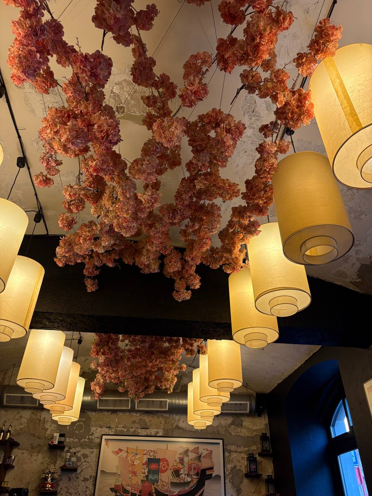

Po brmlabu hlad. Google říká, že deset minut pěšky odsud je Taiko Ramen Bar na Husitské. Recenze slibují „nejlepší ramen v Evropě“. Tak to teda uvidíme.

Sušené červené květiny u stropu a teplé světlo. Na ramen bar až podezřele hezké.
Uvnitř je to příjemně temné, ze stropu visí sušené červené květiny mezi lampami. Vypadá to jako místo, které dělal někdo, kdo byl v Tokiu a nechtěl to jenom okopírovat.
Objednali jsme dva. Jeden krémový s křupavými nudlemi navrchu, druhý s pořádným chashu a houbami. Oba výborné. Vývar hustý a sytý, nudle al dente, vajíčko s měkkým středem přesně jak má být.
A jo — ramen se pije z misky. Nudle hůlkama, vývar zvedneš oběma rukama a srkáš. V Japonsku je srkání u ramenu známka toho, že ti chutná. Žádná lžíce není potřeba.
Jeden ramen nestačí na verdikt. Přesunuli jsme se na Vinohrady do Misky — Španělská 2, pár minut od Náměstí Míru. Zakladatelé se učili v ramen škole v Osace, takže by to měla být jiná liga.